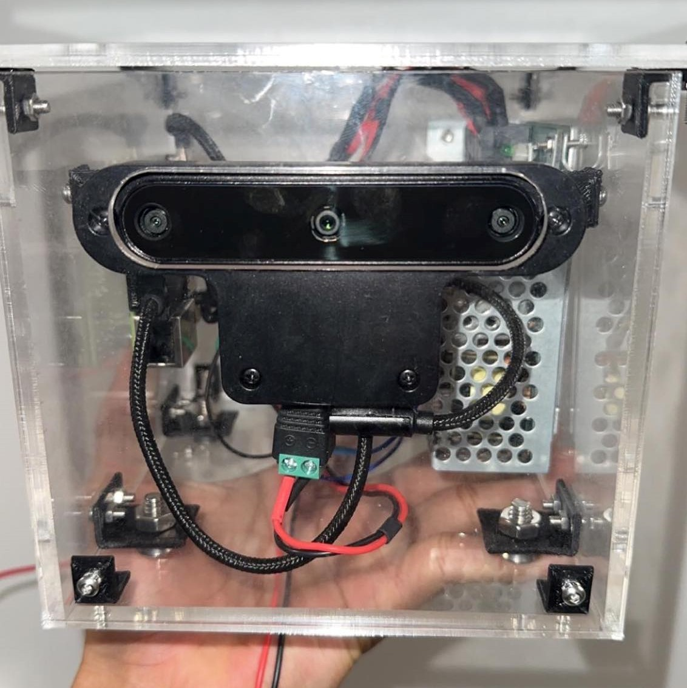
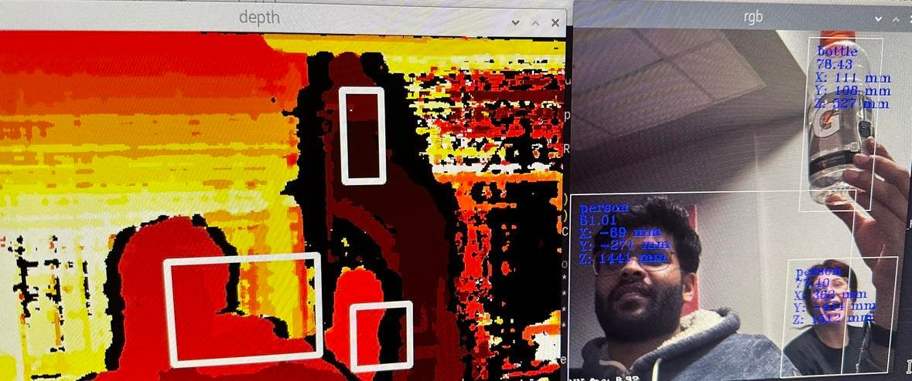

Week 7: Ready, Set, Demo!
March 6, 2023
Summary
Details coming later this week!
Mechanical
Electrical/Hardware
Software
Week 6: Testing Complete
February 25, 2023
Summary
After execution of a series of test plans in suitable riding conditions in the United States, MotoEye proved to
be effective in its designed purpose. The test rider was successfully notified of impending forward facing obstacles
under designed detection distances and relative speeds.
Week 5: Getting Ready for Testing
February 16, 2023
Summary
All component sections work well as expected after total integration. At this point a first prototype is complete pending on road testing.
Mechanical
All sides, base, and lid of the box were successfully laser cut. Custom L-brackets were 3D printed. Box was assembled along with all electrical
components mounted and lid secured. Plan to paint acrylic after testing has been completed.
Electrical/Hardware
Final power system wired together within box and being powered from a 12 V supply (the voltage of a motorcycle battery). Custom cables all working,
including communication between camera and pi and both LEDs. Cable management completed for neatness within housing. Currently, the
status LED is hard wired to power pin of Raspberry Pi to indicate system power.
Software
Final touches made on object detection algorithm, with filtering done for objects that are likely to be classified as obstacles on the road.
Integration with the GPIO firmware to light up the warning LED completed and was tested with human detection.
Relative velocity algorithm also implemented and tested with human interaction (LED should only turn on while walking quickly towards the camera i.e. higher relative velocity).
Software ready to be tested on the road!

Week 4: Beginning to Integrate
February 8, 2023
Summary
Progress in all sections are complete or near completion pending small challenges. Introductory steps of component integration has begun.
Mechanical
More mechanical design changes made in order to enable assembly of separate laser cut acrylic sides of the box. Overall plan is to join
sides using custom 3D printed L-brackets and sealant (for water-proofing and extra security). All required fasteners purchased. Test laser cut completed.
Electrical/Hardware
More custom cables built. Begin using Raspberry Pi as host computer for camera! In order to do this, a virtual environment was setup on the Pi where
all required libraries were installed, including OpenCV. Additional firmware was developed in order to light up test LEDs on a breadboard using the
GPIO pins of the Pi.
Software
Begun development logic for lighting up LED when object detected in certain distance range. At this point, developemnt is incomplete due to challenges
handling LED triggers for false and multiple object detection.

Week 3: Development Continues
January 31, 2023
Summary
Progress of development continues in all aspects of the project. Mechanical design changes are required for overall durability
Mechanical
Small mechanical design change for how the lid will be mounted to the box. 3D printed the box in PLA (no lid) with success. All mounting holes
were confirmed to be dimensioned properly for electronics mounting. While torquing down screws, small deformities resulted in the PLA.
New approach -> laser cut acrylic as this material has a stronger yield strength
Electrical/Hardware
Upgraded to Raspberry Pi 4 for wifi module capabilities. Started testing power system (DC-DC converter being used to power camera and Raspberry Pi).
Began constructing custom cables for system. Remote access to Pi over SSH achieved.
Software
Reliability of object detection proved to be unreliable. Several datasets were tried as well as different neural networks. Upgrading to the
Yolo V6 Nano Neutral network using the coco dataset provided most accurate detection. All hosting was primarily done on a laptop at this point.
Week 2: Initial Development Progress
January 23, 2023
Summary
The depth detection of the recognized object was achieved using the camera.
Software
The stereo depth features of the camera were explored. The depth function was implemented to calculate the depth/distance of the detected object from the camera.
This was achieved using the Yolo v5 deep neural network for obstacle detection. A sample of detection with respective dsitances can be seen in the image below.

Week 1: Getting Started
January 16, 2023
Summary
All major compoments are in hand. Initial setup and development has begun!
Mechanical
The 3D printer has been set up and calibrated, awaiting our first test print.
Electrical/Hardware
The raspberry pi model 3B+ board that will be used for our processor was flashed
and loaded with the raspbian desktop operating system to begin inital development.
Software
The camera was configured using depthAI sdk. A virtual environment was created to get an isolated environment for dependency management. The Camera output was
recognised, and had a 1 second lag. Testing for object detection was started using the Yolo v5 deep neural network.
Week 0: Summary of MTE 481
January 9, 2022
Summary
By the end of MTE 481, all parts were ordered, some already in hand. At this point the team had a clear sense of direction given a comprehensive design plan
for the various system subsections with a schedule in place for construction, testing and redesign as applicable.